転送¶
Archivematica では、 転送 は、デジタルオブジェクトのセットを Archivematica に移動し、素材を提出情報パッケージ (SIP) に変換するプロセスを指します。[転送] タブでは、Archivematica に保存するためのコンテンツを準備します。
このページでは：
転送タブ¶
[転送] タブは、多くのユーザーがデジタルオブジェクトをアーカイブ情報パッケージ (AIP) に変換するプロセスを開始する場所です。[転送] タブで、ユーザーは保存する素材を選択し、転送に名前を付けて、転送プロセスを開始します。
{kind=link}
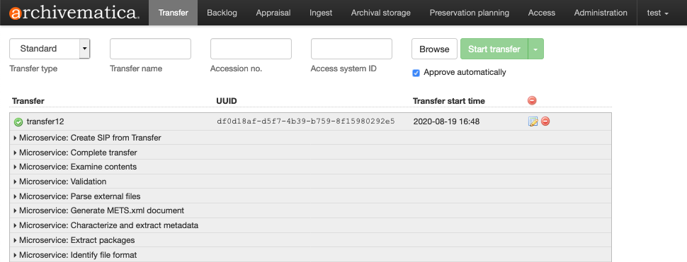
[転送] タブの上部にあるセクションには、Archivematica に転送するための素材が表示されます。 Browse と Start transfer ボタン、および Approve automatically チェックボックスに加えて、入力するフィールドが 4 つあります。
転送タイプ ：転送される素材の種類。詳細は、 転送タイプ を参照してください。
転送名 ：転送の名前。これは、結果のアーカイブ情報パッケージ（AIP）の名前になります。これは必須項目です。
Accession no. ：転送のためにアクセッション番号を入力すると、登録イベントとしてアクセッション番号がAIP METSファイルにコピーされます。Archivematica 内での AIP の識別や検索には使用されません。このフィールドはオプションです。
Access system ID: Entering an access system ID field when you are setting up your transfer allows you to automate the process of uploading a DIP to AtoM. Archivematica will automatically grab this value when it reaches the Upload DIP microservice. See Upload a DIP to AtoM for more information. This field is optional.
ブラウズ ：[ブラウズ] ボタンを押すと、転送ブラウザが開きます。これにより、ユーザーは設定された転送元の場所を表示およびブラウズできるようになります。Archivematica がアクセスできる転送元の場所の設定の詳細については、 管理者マニュアル - ストレージサービス を参照してください。ディレクトリを選択して 追加 をクリックすると、素材のディレクトリが転送に追加されます。
{kind=link}
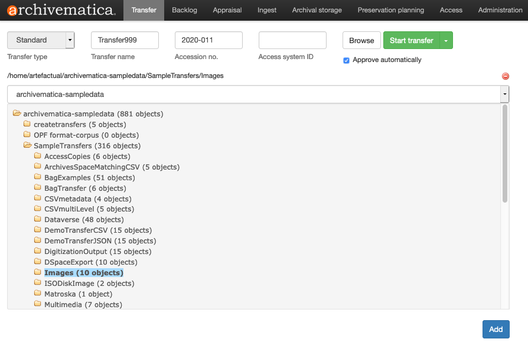
転送の開始 ：転送に名前を付け、転送ブラウザから素材を選択したら、[Start transfer]ボタンで転送マイクロサービスをキックオフします。
処理設定 ：緑色の Start Transfer ボタンの右端に下向きの矢印があります。クリックすると、ドロップダウンメニューが表示され、転送に使用する処理設定プロファイルを選択できます。詳しくは、 Choose a processing configuration を参照してください。このドロップダウンを無視すると、デフォルトの処理設定が使用されます。
自動的に承認する ：このボックスチェックを外すと、Archivematica は最初のマイクロサービスである 転送の承認 で一時停止し、転送が適切に設定されていることを確認する機会が与えられます。ボックスがチェックされている場合、Archivematica はこのステップで一時停止しません。
転送が開始されると、転送準備エリアの下に表示されます。 いくつかのマイクロサービス が転送された素材上で実行され、SIPになる準備をします。マイクロサービスのリストは下から上に読んでください。
{kind=link}
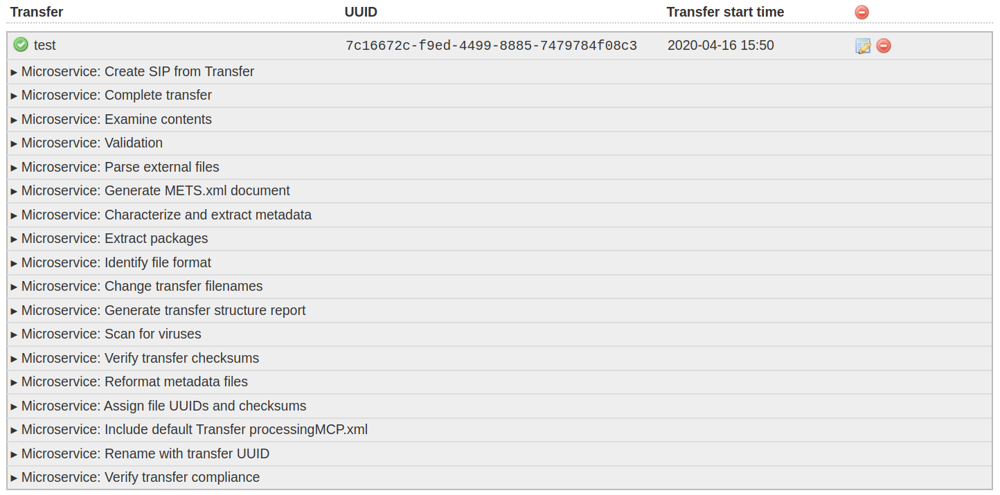
転送プロセスの最後に、転送された素材は、 バックログ に送信され、AIP に変換する準備が整うまで保存されます。バックログにより、ユーザーは、 評価 タスクを実行する機会も得られます。あるいは、ユーザーは転送されたマテリアルを SIP に変換し、それを インジェスト タブに送信することもできます。
完了または拒否された転送を削除することで、「転送」タブをクリーンアップできます。詳しくは、 Transfer タブのクリーンアップ を参照してください。
デジタルオブジェクトの転送準備¶
Archivematica は、形式にとらわれず、どのようなファイルでも受け入れて処理できます。つまり、どのようなファイルでも受け入れて処理できます。しかし、Archivematica に転送する際に、どのような構造で素材を転送するかによって、転送されたファイルの処理に大きな影響を与えます。以下に、デジタル保存に関連する特定の目標を達成するための転送の構造について詳しく説明します。
Archivematica が転送をどれだけ早く処理できるかは、転送のサイズ (個々のオブジェクトと全体としての転送の両方) と転送の複雑さの 2 つの要素によって決まります。Archivematica パイプラインの速度と効率は非常に主観的なものであり、その多くは使用している Archivematica インスタンスの仕様により異なります。大規模な転送や複雑な転送を処理するように Archivematica を設定する方法の詳細については、 Archivematica のスケーリング を参照してください。
許可¶
Archivematica が保存タスクを実行できるようにするには、Archivematica ユーザーは、転送元の場所にあるディレクトリに対する実行権限とファイルに対する読み取り権限を持っている必要があります。
Archivematica ユーザーに十分な権限がない場合、転送に追加できるディレクトリまたは圧縮ファイルが利用できないことが表示されることがあります (オブジェクトは、グレー表示され、名前には取り消し線が付きます)。正確な権限設定によっては、転送にディレクトリを追加できる場合がありますが、転送は開始されません。
転送の種類¶
Archivematica に転送される一部の素材には特別な処理が必要です。これらの特殊なワークフローを開始するには、特定の 転送タイプ を選択します。7 種類の転送タイプが利用可能です。
{kind=link}
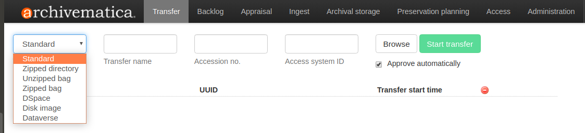
標準 ：標準転送が、Archivematica ではデフォルト設定されています。標準転写タイプであらゆる素材の転写が可能です。特別な処理タスクは実行されません。どの転送タイプを選択すればよいかわからない場合は、標準の転送から始めてください。標準転送の構成方法の詳細については、以下の 基本転送 と後続のセクションを参照してください。
圧縮ディレクトリ ：Zip圧縮されたディレクトリの転送は、Archivematicaのデフォルトの転送タイプの一種です。すべての素材は、Zip圧縮されたディレクトリ転送タイプを使って転送できます。素材は、最初に .zip 、 .tgz 、 .tar.gz ファイルに格納されます。Zip 形式のディレクトリ転送が開始されると、Zip は解凍され、上記の標準転送ワークフローを使用して処理されます。ZIP圧縮されたディレクトリ転送の内部構造は、標準転送と同じで、ファイルの緩やかなコレクションにすることも、より構造化されたものにもできます。例えば、 objects や metadata ディレクトリにmetadata.csvやidentifiers.jsonなどのArchivematicaの特別なファイルを含めることもできます。
解凍されたバッグ ：Archivematica は、 BagIt File Packaging Format に従ってパッケージ化された素材を認識し、利用できます。Archivematicaに素材を転送する前にバッグを作成する習慣がある場合は、その習慣を継続できます。Archivematica は転送プロセスの初期段階で、チェックサムやペイロードのオキサムなど、バッグ作成プロセスで作成されたマニフェスト情報を参照し、バッグを妥当性確認します。Unzipped bags転送タイプは、圧縮形式で保存されていないバッグに使用できます。Archivematica によるバッグの実装方法の詳細については、 Bags を参照してください。
このスクリーンショットは、バギングされた転送のレイアウトを示しています。バギングプロセスは、保存するデジタルオブジェクトを data ディレクトリに移動し、BagIt 仕様で必要とされる様々なメタデータファイルを作成します（すなわち、 bag-info.txt 、 manifest-md5.txt ）。
{kind=link}
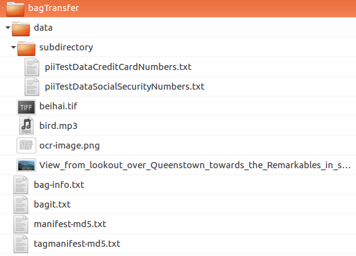
ジップされたバッグ ：アンジップされたバッグと同様に、ジップバッグ転送タイプは、 BagIt File Packaging Format に従ってパッケージされた素材に使用できます。Zip バッグ転送タイプは、圧縮（または Zip）形式で保存されたバッグに使用します。Archivematica では、 .zip 、 .tgz 、 .tar.gz の形式を使用できます。転送タイプをZipped bagsに切り替えると、.zip、.tgz、.tar.gzとして保存されたファイルのみが転送ブラウザで選択できるようになります。Archivematica がどのようにバッグを実装しているかについては、 バッグ を参照してください。
DSpace ： DSpace リポジトリから素材をエクスポートすると、エクスポート全体と個々の素材の METS ファイルがパッケージ化されます。Archivematica は、これらの METS ファイル内のデータの一部を再利用できます。詳しくは、 DSpace を参照してください。
ディスクイメージ ：ディスクイメージを保存するためにディスクイメージ転送タイプを選択する必要はありません (ディスクイメージがバッグ化されている場合は、標準転送タイプまたはバッグ転送タイプを使用できます)。ただし、イメージングプロセスに関する情報を記録できる追加のディスクイメージ固有のメタデータフォームが提供されます。詳細については、 フォレンジックディスクイメージ を参照してください。
Dataverse ：DSpace 転送タイプと同様に、 Dataverse リポジトリからエクスポートされた素材には、Archivematica が再利用できるメタデータが含まれています。詳しくは、 Dataverse を参照してください。
基本的な転送¶
このセクションでは、標準転送の基本セットアップについて説明します。他の転送タイプを使用する予定がある場合は、転送タイプの詳細について、上記の 転送タイプ セクションを参照してください。
Archivematicaでは、zip圧縮されたバッグの転送を除き、転送されるすべての素材がトップレベルのディレクトリに含まれている必要があります。転送のディレクトリ構造は、単純なもの（つまり、すべてのファイルが同じディレクトリにある）でも、ネストされた階層構造でもかまいません。
次のスクリーンショットは、 basicTransfer という基本的な転送を示しています。トップレベルのディレクトリに4つのデジタルオブジェクトがあり、さらに2つのオブジェクトがサブディレクトリにネストされています。
{kind=link}
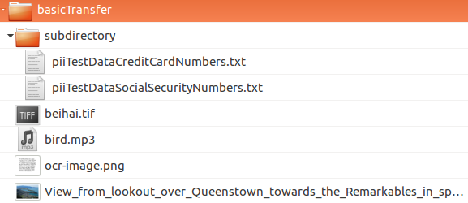
転送には、いくつでもサブディレクトリを持つことができますが、処理時間に影響する場合があります。デジタルオブジェクトのフォーマットは問いませんが、Archivematica がどのようなファイルフォーマットで保存できるかは様々です。Archivematica がどのようにファイルフォーマットの保存を行うかについては、 保存計画 を参照してください。
これは、Archivematica における転送の基本構造です。ただし、さまざまなバリエーションがあります。以下のセクションでは、デジタルオブジェクトの保存に関する特定の目標を達成するための基本的な標準転送に基づいて説明します。
説明、権利、および/またはイベントメタデータを伴う転送¶
説明、権利、イベントのメタデータを転送に含めるには、 metadata というサブディレクトリを転送の最上位に追加する必要があります。metadataディレクトリ名はArchivematicaの予約名です。メタデータディレクトリを含めることで、メタデータファイルがMETSファイルで適切にマークされるようになります。
{kind=link}
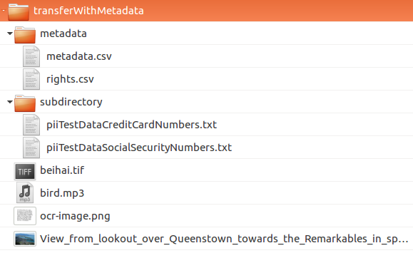
コンテンツを AIP METS に転置できるようにメタデータと権利 CSV ファイルまたはイベント XML ファイルを構造化する方法など、Archivematica へのメタデータのインポートの詳細については、 メタデータのインポート を参照してください。
バッグにメタデータを追加¶
詳細については、 バッグへのメタデータの追加 を参照してください。
提出書類を伴う転送¶
提出文書は、保存されているデジタルオブジェクトに関連するが、厳密にはコレクションの一部ではないマテリアルを説明する Archivematica の概念です。たとえば、ドナーとの契約、素材に関する通信、保存報告書などがあります。Archivematicaは、転送に提出文書が含まれていることを確認した場合、AIP METSファイルにこの文書の説明を含めることができます。
提出文書は、標準、アンジップ、ジップ、ディスクイメージの転送タイプに追加できます。
投稿文書を含む転送を作成するには、トップレベルのディレクトリに metadata ディレクトリが含まれていなければなりません。metadataディレクトリの中に、 submissionDocumentation という入れ子になったディレクトリがあり、その中に投稿文書ファイルが含まれています。
{kind=link}
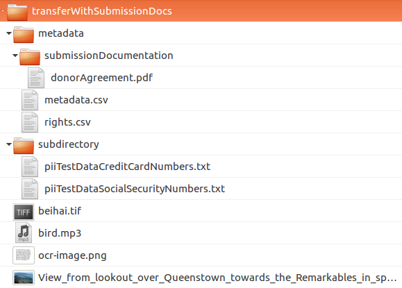
バッグに提出書類を追加¶
詳細については、 バッグへのメタデータの追加 を参照してください。
既存のチェックサムを使用して転送を作成¶
Archivematica は、システム外で作成された MD5、SHA1、SHA256、SHA512 チェックサムを妥当性確認できます。Archivematica への移行時にデータの整合性が失われることが懸念される場合は、Archivematica の外部でチェックサムを作成することをお勧めします。チェックサムは、 Verify transfer checksums マイクロサービスの転送タブでチェックされます。
チェックサムは、標準、DSpace、およびディスクイメージ転送タイプに追加できます。チェックサムは、バッグの要件の一部として、解凍された転送タイプと圧縮された転送タイプの両方に追加されることに注意してください。
チェックサムファイルは metadata ディレクトリに配置されます。上記の 説明メタデータや権利メタデータを伴う転送 セクションに従って、このディレクトリに説明メタデータと権利メタデータの CSV を配置することもできます。
{kind=link}
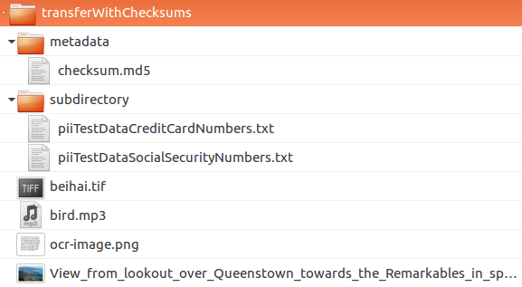
チェックサムファイルには、次のような名前を付ける必要があります：
checksum.md5、checksum.sha1、checksum.sha256またはchecksum.sha512。
チェックサムファイル自体には、チェックサムごとに 1 行が含まれている必要があります。チェックサムで始まり、その後に 2 つのスペース、その後にファイルパスが続きます:
2121dca88ad7f701d3f3e2d041004a56 beihai.tif
7f42199657dea535b6ad1963a6c7a2ac bird.mp3
6dc1519418859ea5c20fd708e89d7254 ocr-image.png
4737e4dacfc9510915ea58cf12e51712 View_from_lookout_over_Queenstown_towards_the_Remarkables_in_spring.jpg
75388a532283b988f79206d63f65e9a2 subdirectory/piiTestDataCreditCardNumbers.txt
1d7193ea3b2193c79f55ea7e645503a9 subdirectory/piiTestDataSocialSecurityNumbers.txt
チェックサムチェックが失敗すると、 転送チェックサムの確認 マイクロサービスでエラーが表示され、転送は失敗します。マイクロサービスを展開すると、ジョブ メタデータディレクトリのチェックサムを妥当性確認する が赤色であることがわかります。エラーを確認するには、ジョブの歯車アイコンをクリックします。
重要
バッグを作成する場合、チェックサムファイルは、バッグ作成プロセスの一部として作成されます。チェックサムを手動で作成する必要はありません。
既存の永続的識別子による転送¶
Archivematicaは、DOI識別子やカタログシステムで作成された識別子など、Archivematicaの外部で作成された永続的な識別子をインポートできます。転送のメタデータディレクトリに identifiers.json ファイルを含めることで、Archivematica がファイルに対して作成した PREMIS オブジェクトにバインドできます。
[
{
"file": "objects/bird.mp3",
"identifiers": [
{
"identifier": "01D9T8NGAQ2DBN8M4D23HM5FYN",
"identifierType": "ULID"
}
]
},
{
"file": "objects/beihai.tif",
"identifiers": [
{
"identifier": "https://example.com/file/id/2367652602",
"identifierType": "EXID"
}
]
}
]
identifiers.json ファイルは、 インジェスト タブの Process metadata directory マイクロサービス中に解析されます。
{kind=link}
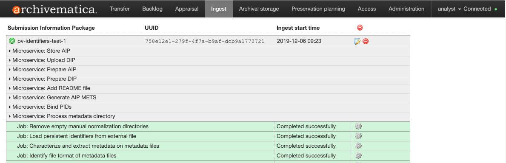
AIP が作成されると、識別子は、AIP METS ファイル内の各オブジェクト techMD 内の premis:objectIdentifier としてリンクされます。
<mets:techMD ID="techMD_4">
<mets:mdWrap MDTYPE="PREMIS:OBJECT">
<mets:xmlData>
<premis:object xmlns:premis="http://www.loc.gov/premis/v3" xsi:type="premis:file" xsi:schemaLocation="http://www.loc.gov/premis/v3 http://www.loc.gov/standards/premis/v3/premis.xsd" version="3.0">
<premis:objectIdentifier>
<premis:objectIdentifierType>UUID</premis:objectIdentifierType>
<premis:objectIdentifierValue>2251bc66-85c1-4d64-952e-b0d7ea2db385</premis:objectIdentifierValue>
</premis:objectIdentifier>
<premis:objectIdentifier>
<premis:objectIdentifierType>EXID</premis:objectIdentifierType>
<premis:objectIdentifierValue>https://example.com/file/id/2367652602</premis:objectIdentifierValue>
</premis:objectIdentifier>
</premis:object>
</mets:xmlData>
</mets:mdWrap>
</mets:techMD>
<mets:techMD ID="techMD_5">
<mets:mdWrap MDTYPE="PREMIS:OBJECT">
<mets:xmlData>
<premis:object xmlns:premis="http://www.loc.gov/premis/v3" xsi:type="premis:file" xsi:schemaLocation="http://www.loc.gov/premis/v3 http://www.loc.gov/standards/premis/v3/premis.xsd" version="3.0">
<premis:objectIdentifier>
<premis:objectIdentifierType>UUID</premis:objectIdentifierType>
<premis:objectIdentifierValue>480d31e0-f57f-4254-a5bf-c813ed5734d5</premis:objectIdentifierValue>
</premis:objectIdentifier>
<premis:objectIdentifier>
<premis:objectIdentifierType>ULID</premis:objectIdentifierType>
<premis:objectIdentifierValue>01D9T8NGAQ2DBN8M4D23HM5FYN</premis:objectIdentifierValue>
</premis:objectIdentifier>
</premis:object>
</mets:xmlData>
</mets:mdWrap>
</mets:techMD>
Archivematica で使用されるメタデータ要素がどのようにエンコードされるかについて詳しくは、 ArchivematicaのMETS および ArchivematicaのPREMISメタデータ を参照してください。
保存またはアクセス派生物を含む素材の転送 （手動正規化）¶
Archivematica の主なファイル保存方法は、「保存計画」タブの normalization rules に従って normalize 正規化することです。しかし、Archivematica 以外（デジタル化プロジェクトなど）でデジタルオブジェクトの保存用コピーやアクセス用コピーを作成したい場合もあります。Archivematicaは、手作業による正規化作業を認識し、新しい派生物を作成する代わりに、保存コピーやアクションコピーを使用できます。
手動で正規化された保存デリバティブとアクセスデリバティブを用いた転送の仕組みの詳細については、 手動正規化 を参照してください。
アクセス派生物のみを使用した素材の転送¶
オリジナルとそのアクセス派生物のみを転送する場合は、上記の 手動正規化 オプションよりも多少合理化されたワークフローがあります。
アクセスデリバティブは、標準的な転送タイプに追加できます。
最上位ディレクトリ内に access サブディレクトリを作成し、このファイル内にオリジナルのアクセスコピーを配置します。
{kind=link}
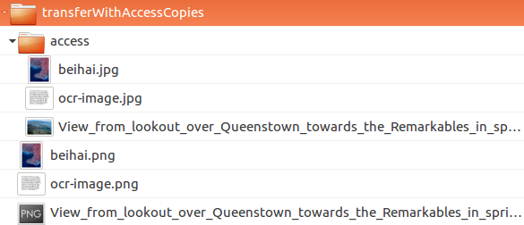
上に示した例では、元のファイルはPNGです（すなわち beihai.png ）。各ファイルには、JPG （ beihai.jpg ） 形式のアクセスコピーがあります。Archivematicaがオリジナルファイルとアクセスコピーのリンクを認識するためには、ベースファイル名（拡張子の前）が一致している必要があります。
この転送を処理すると、Archivematica は、アクセスコピーの存在を自動的に認識します。 [インジェスト] タブ の normalization マイクロサービスでは、Archivematica が、提供されたアクセスコピーから常に普及情報パッケージ (DIP) を作成するため、表示される正規化オプションが少なくなります。
{kind=link}
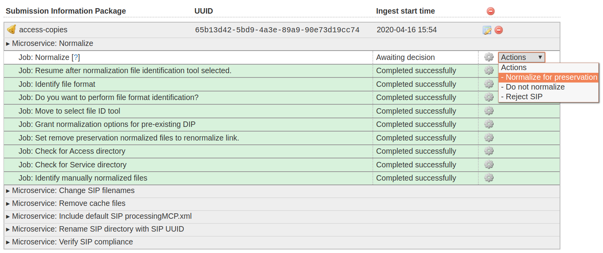
サービス（メザニン）ファイルで素材を転送¶
上記の manual normalization と manual normalization オプションと似ていますが、Archivematica は、サービス（またはメザニン）ファイルの存在を認識もできます。サービスファイルは、オリジナルファイルから作成された高品質の派生ファイルで、他の派生ファイルを作成するために使用されます。例えば、デジタル化プロジェクトにおいて、画像を高画質のTIFFとしてスキャンし、そのTIFFから高画質のJP2000を生成するとします。新しいアクセス派生物が必要になるたびに、TIFFにアクセスする代わりに、JP2000を使用してファイルの新しいコピーを作成します。
サービス（またはメザニン）ファイルは、標準的な転送タイプに追加できます。
トップレベルディレクトリの中に、 service サブディレクトリを作成し、オリジナルのサービスコピーをこのファイルの中に置きます。
{kind=link}
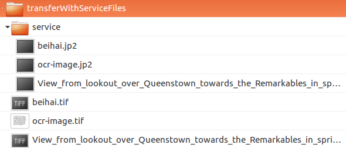
上に示した例では、元のファイルはTIFFです（つまり beihai.tif ）。各ファイルには、JP2000 （ beihai.jp2 ） 形式のサービスコピーがあります。Archivematicaがオリジナルファイルとサービスコピーのリンクを認識するには、ベースファイル名（拡張子の前）が一致している必要があります。
この転送処理を行うと、Archivematicaは、自動的にサービスコピーの存在を認識します。 正規化 マイクロサービスの インジェストタブ では、オリジナルファイルではなく、アクセス派生物を生成するためにサービスコピーを使用するオプションが与えられます。
{kind=link}
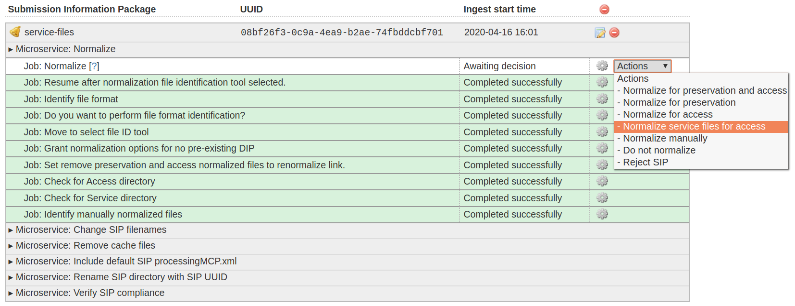
注釈
サービスファイルからアクセスコピーを作成する場合は、正規化サービスで アクセス用にサービスファイルを正規化 を選択します。上記の アクセス派生物を使用した素材の転送 の手順に従ってアクセスコピーを含めた場合は、正規化マイクロサービスで 正規化しない を選択します。Archivematica がアクセスディレクトリを検出したため、DIP は、自動的に作成されます。
転送処理¶
素材が Archivematica 用にパッケージ化されたら、転送プロセスを開始できます。
転送を開始¶
Archivematica にサインインし、
Transferまたは Archivematica ロゴをクリックして、[転送] タブに移動します。[転送] タイプのプルダウン メニューから 転送タイプ を選択します。
転送先に名前をつけます。転送名はAIPの名前になりますので、意味のある名前にしてください。
必要に応じて、アクセッション番号やアクセスシステム ID も追加し、
Approve transferチェックボックスをオンまたはオフにします。参照 をクリックして転送ブラウザを開き、保存するデジタルオブジェクトを選択します。転送ブラウザの上部バー (以下のスクリーンショットでは
archivematica-sampledataと呼ばれる) をクリックすると、転送元の場所を切り替えることができます。黄色のフォルダーアイコンをクリックして、ネストされたディレクトリを探索します。保存する素材を選択するには、フォルダーの名前 (または、圧縮バッグを転送する場合は .zip ファイル) をクリックして強調表示し、 追加 をクリックします。ブラウザを閉じるには、もう一度 ブラウズ ] をクリックします。
処理設定を選択¶
追加 ボタンをクリックすると、 転送開始 ボタンがアクティブになります。
緑色の Start Transfer ボタンの右端に下向きの矢印があります。クリックするとドロップダウンメニューが表示され、転送に使用する処理設定プロファイルを選択できます。
これらのプロファイルは、ArchivematicaのAdministrationタブで定義します。これらのプロファイルを使用することで、Archivematicaが転送やインジェストの際に提示するジョブの決定ポイント（サムネイルを生成するかどうか、どのAIP保存場所を使用するかなど）を設定できます。詳細については、管理者マニュアルの Processing configuration を参照してください。
[管理]タブで新しい処理設定プロファイルを定義すると、 [転送開始] ドロップダウンのオプションとして表示されます（例："my_custom_config" ）。
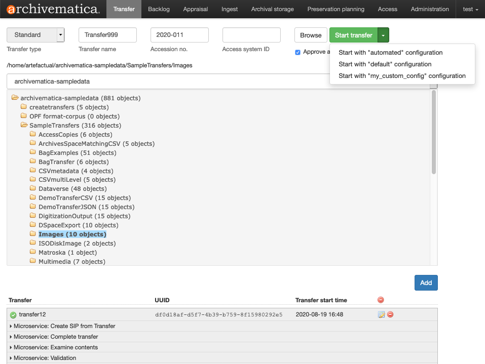
この処理設定プロファイルを転送に使用したい場合は、ドロップダウンメニューから選択し、 Start Transfer （転送開始）ボタンを押してください。
Archivematica から転送が開始された旨と、転送とインジェスト中に発生する決定ポイントで使用する処理設定プロファイルが通知されます。
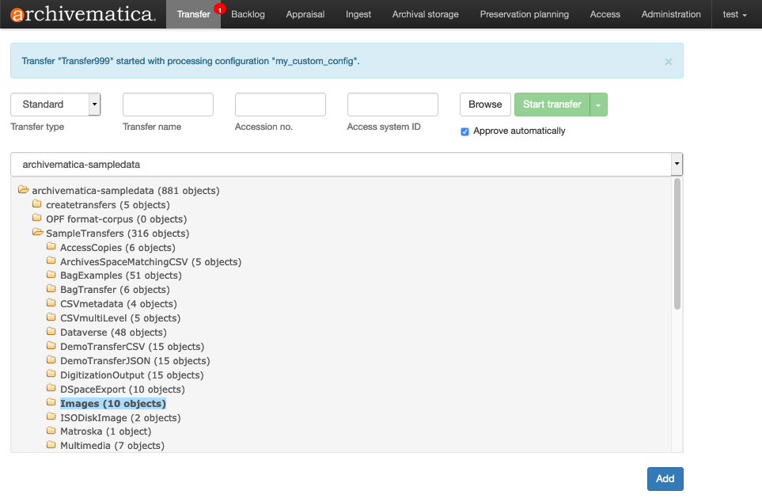
ドロップダウンメニューを無視して 転送開始 メニューを押すだけの場合は、"デフォルト"の処理設定が使われます。
{kind=link}
{kind=link}
注釈
転送のルートディレクトリに proccessingMCP.xml ファイルを含めることを選択した場合、その決定ポイントは、 転送開始 ボタンで選択された設定プロファイルよりも優先されます。
転送タブマイクロサービス¶
転送開始 をクリックすると、転送準備領域の下に転送が表示されます。これには数秒しかかかりませんが、転送が非常に大きい場合は遅延する可能性があります。転送が表示されない場合は、別の転送を開始しないでください。処理スペースが不足している可能性があり、別の新しい転送を開始すると問題がさらに悪化するだけなので、代わりにシステム管理者に問い合わせてください。
転送タブの各マイクロサービスは、お客様の素材をSIP（Submission Information Package）、そしてAIP（Archival Information Package）にするための準備を行います。Archivematica のマイクロサービスアーキテクチャの詳細については、 マイクロサービス を参照してください。
マイクロサービスの中には、人の介入なしに実行されるものもあれば、ユーザーに決定を促すものもあります。初期の例としては、 Identify file format マイクロサービスがあり、転送中のファイルに対してファイルフォーマット識別ツールを実行するかどうかの判断をユーザーに求めます。
{kind=link}
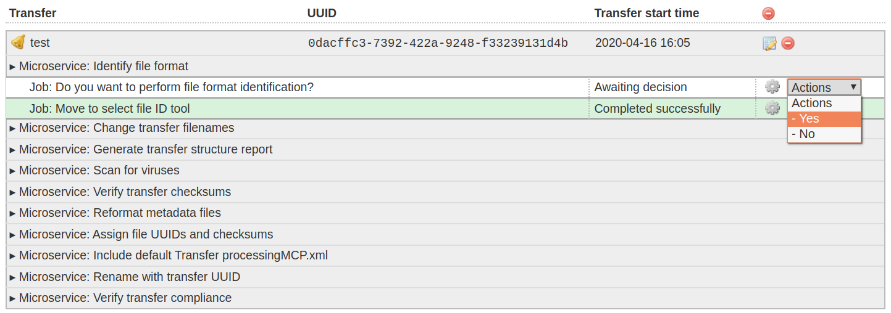
Archivematica では、すべての決定ポイントを自動化することが可能です。詳しくは、 処理設定 を参照してください。
[転送] タブで実行されるマイクロサービスには、次のものがあります：
Verify transfer compliance ：転送が転送タイプの要件に従って適切に構造化されていることを妥当性確認します。
Rename with transfer UUID ：転送全体に一意のユニバーサル識別子を割り当てます。
ファイルのUUIDとチェックサムをオブジェクトに割り当て ：各デジタルオブジェクトに一意のユニバーサル識別子とチェックサムを割り当てます。
Verify transfer checksums ：転送に含まれる チェックサムを妥当性確認 .
METS.xml文書を生成 ：転送のオリジナルオーダーをキャプチャするMETSファイルを作成します。このMETSファイルは、この転送（transfer）から 生成されるすべてのSIPに追加されます。
ウィルスのスキャン ：ウィルスとマルウェアをスキャンします。詳しくは、 ウイルスのスキャン を参照してください。
Generate transfer structure report ：オリジナル転送のディレクトリツリーを生成し、AIPにテキストファイルとして配置します。
Change transfer filenames ：フォルダー名やファイル名から、アンパサンドなどの禁止文字を削除します。詳細については、 ファイル名の変更 を参照してください。
Identify file format ：ファイル形式を識別するかどうかを選択できます。"はい" を選択すると、有効なファイル識別コマンドの実行が促されます。詳細については、 識別 を参照してください。
Extract packages ：ZIP圧縮されたファイルやその他のパッケージ化されたファイルからコンテンツを抽出します。詳しくは 展開 を参照してください。
Characterize and extract metadata ：ファイルに埋め込まれた技術的なメタデータを抽出します。詳しくは、 特性化 を参照してください。
Validation ：ファイルフォーマットをフォーマットの仕様に照らして妥当性確認します。詳細は、 妥当性確認 を参照してください。
内容検査 ： Bulk Extractor を実行します。
Create SIP from transfer ：ユーザーは、転送を Backlogタブ に送ることができます。バックログを使用することで、ユーザーは、 評価 タスクを実行もできます。あるいは、ユーザーは、転送された素材をSIPに変換し、 インジェスト できます。この時点で転送を拒否もできます。
{kind=link}
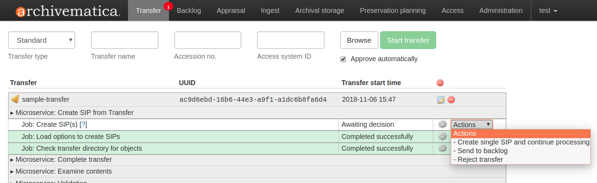
注釈
エラスティックサーチを使用せずに Archivematica を実行している場合、または エラスティックサーチの機能が制限されている場合は、転送をバックログに送信するオプションがない場合があります。
処理中の転送には、どのマイクロサービスが完了したのか (緑色)、どのマイクロサービスが進行中なのか (オレンジ色) が表示されます。マイクロサービスが失敗するかエラーが発生すると、マイクロサービスの背景が緑からピンクに変わり、転送名または SIP 名の横に"失敗"アイコンが表示されます。エラーの処理方法の詳細については、 エラー処理 を参照してください。
転送ダッシュボードのクリーンアップ¶
[転送] タブのダッシュボードは、時々クリーンアップする必要があります。転送のリストが増えると、Archivematica がこの情報を解析するのにかかる時間が長くなり、ブラウザーのタイムアウトの問題が発生する可能性があります。
単一転送の削除¶
削除する転送にユーザー入力が必要ないことを確認してください。ダッシュボードから転送を削除する前に、すべてのユーザー入力を完了し、転送を完了する (つまり、バックログに送信するか SIP を作成する) か、転送を拒否する必要があります。
ダッシュボードから転送を削除する準備ができたら、転送名の右側にある赤い丸のアイコンをクリックします。
[確認] ボタンをクリックして、ダッシュボードから転送を削除します。
{kind=link}
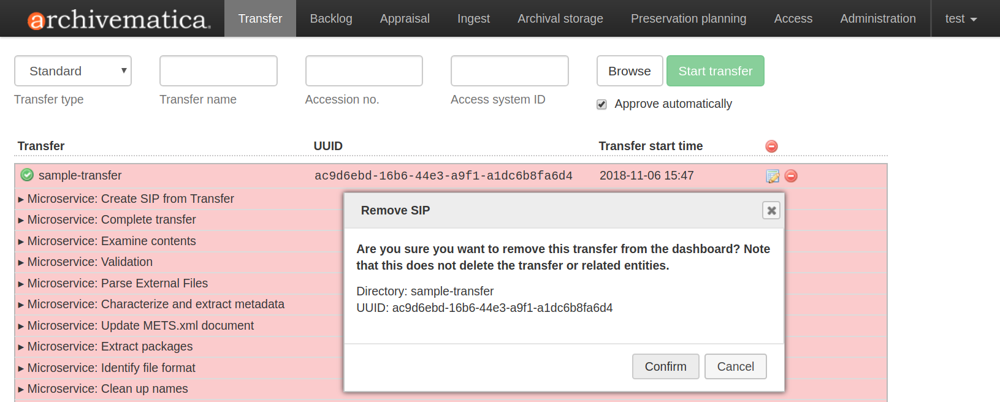
注釈
これにより、転送元ディレクトリなどの転送エンティティや関連エンティティは削除されません。ダッシュボード上の表示からそれらを削除するだけです。
完了した転送をすべて削除¶
削除したい転送が完了していることを確認してください（例：バックログまたはインジェストに送信）。この機能は、完了した転送に対してのみ機能しますので、拒否された転送は、1つずつ削除する必要があることに注意してください。
完了したすべての転送を削除する準備ができたら、転送リストの表ヘッダーにある赤丸のアイコンをクリックします。
[確認] ボタンをクリックして、完了した転送をすべてダッシュボードから削除します。
{kind=link}
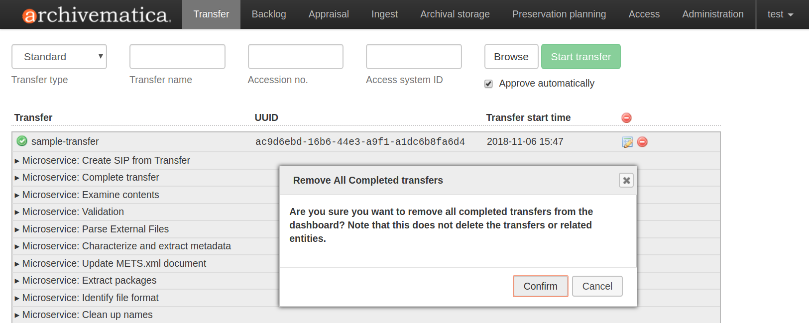